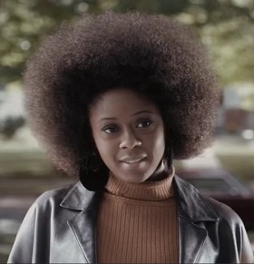
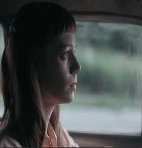
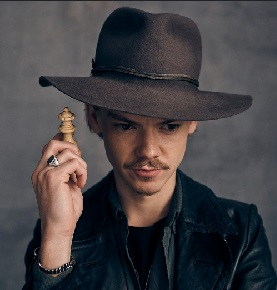
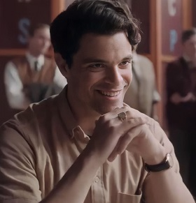

Vasily Borgov
Campeón mundial. El muro contra el que Beth mide su genio.
Elenco
Cada personaje empuja a Beth hacia la gloria, la soledad o la redención. Tocá una imagen para ampliarla.
Campeón mundial. El muro contra el que Beth mide su genio.

Madre adoptiva. Complicidad frágil, martini y viajes al circuito.

Ancla emocional. La voz que recuerda de dónde viene Beth.

Madre biológica. Herencia dolorosa y fascinación por las matemáticas.

Genio excéntrico. Entrenamiento duro y química innegable.

Primer flechazo. La partida que no se juega solo en el tablero.

Conserje y primer maestro. El sótano donde todo empieza.
Campeón estatal. Afecto honesto frente a la obsesión del juego.